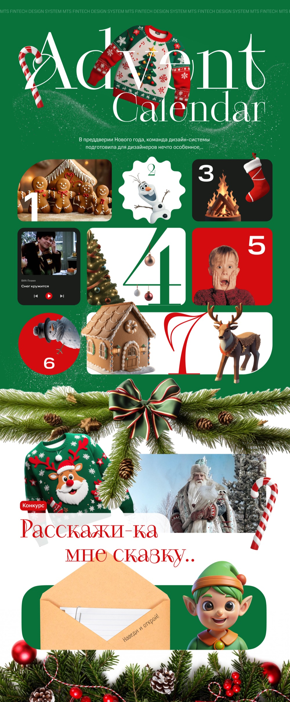

Senior Product Designer
Анастасия Ясинская
Люблю дизайн-системы, помогать людям и разбираться в сложном

Senior Product Designer
Люблю дизайн-системы, помогать людям и разбираться в сложном
Как превратить разрозненные UI-киты в единую систему для 42 продуктовых команд + завести в банк тёмную тему
Плагины и сервисы, которые разрабатывала за время работы в дизайн-системе

Придумала и реализовала адвент для дизайнеров банка, с развлечениями и полезным контентом
26.02.2024 → настоящее время
Ведущий продуктовый дизайнер в Инвестициях
Продуктовый дизайнер в Daily
Реклама и связи с общественностью
Дизайнер-преподаватель
«Настя — замечательный дизайнер, настоящая звезда дизайн-системы!»